Know Business Central: Authoring, business monitoring, and more
Business Central is a Java Web-based application that supports the creation, management, and monitoring of business applications. It is not a required component, although, the usage of this tool can accelerate the development phase with proper rules and process authoring tools, form modeler components, advanced dashboard page creator with out-of-the-box components, and more.
Once your environment is up and running, feel free to access business central to test the features as we go through the topics. We will have an overview of Business Central (BC) features, common tasks, and usage.
Business Assets Overview
After creating a project, Business Central allows the users to create any type of asset related to a business automation project:
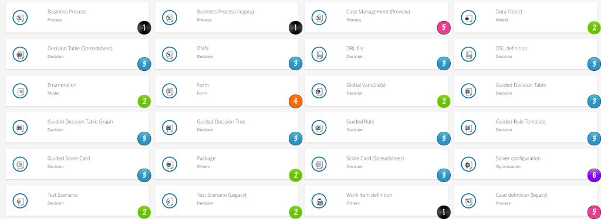
The assets above are colored and numbered as per the following characteristics:| Business Assets | ||
| 1.Black | Assets related to business process management (BPM). Allows the creation of process diagrams using two different designer options: process designer and legacy process designer. Both will allow the creation of BPMN2 assets. | |
| 2.Green | Assets related to the project structure and data models. It will allow the creation of packages, java enumerations (Enum), global variables, and data objects (POJOs) in a friendly interface. | |
| 3.Blue | Assets related to business rules (BRMS). The rules assets are friendly ways for business analysts to define and validate rules without going into deep development scope. Decision Tables can be created with pre-defined options (Rule Template) so that the analyst worries only about configuring the business rule as required per the organization. Decision Model and Notation (DMN) editor is a feature on jBPM which allow the graphic design of business rules. | |
| 4.Orange | Forms are used to collect inputs from humans to proceed with the process. Traditionally, forms were developed using basically HTML, CSS, or Javascript. Business Central has an out-of-the-box Form Modeler. It automatically generates forms based on the task parameters and allows the edition and creation of new forms in a low-code manner. These forms can be used inside business central or can be consumed via REST API and embedded into client applications. | |
| 5.Pink | Asset related to Case Management (CMMN). Case Management assets can also be created into projects. They allow the user to use elements from CMMN to define flexible processes. I’ll post details about Case Management later on further sections. | |
| 6.Purple | It refers to Resource Planning Assets. The creation of solver configurations for optimization and scheduling use case projects can also be made via the Business Central interface. Like every other business asset, the problem solving happens within Kie Server engine, which can, for example, solve resource planning problems using an auto-scalable cloud environment. |
These assets are presented in a user-friendly manner with drag-and-drop tools and easily readable formats for business users. Business Central also provides the possibility of editing the source code if a more developer focused user wants to enhance the project with technically advanced concepts.These assets are presented in a user-friendly manner with drag-and-drop tools and easily readable formats for business users. Business Central also provides the possibility of editing the source code if a more developer focused user wants to enhance the project with technically advanced concepts.
Projects in Business Central
Creating a new project
Creating projects via Business Central is intuitive and straightforward since all the technical details are transparent and more friendly for business users.
The projects are organized in spaces. When created using business central it contains, by default, a proper structure for a kjar with the necessary configuration files like the kmodule.xml.
- To create a project, select a space, and click on “Add Project” button:
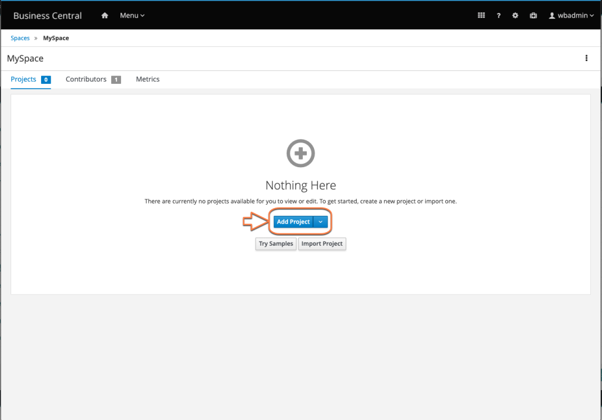
2. Choose a name and click save.A new project was just created and the user should be ready to start authoring business assets.
Importing and exporting projects
The development team can choose to work with standard tools developer IDEs like VSCode, or in Business Central. Due to that, it may be a common practice for the team to import/export the project to/from business central.
To import an existing project from a git repository into Business Central, follow these steps:
- Log in to Business Central and select the space named “MySpace“;
- Click on “Import Project” button, and enter the following Repository URL (no authentication required): https://github.com/kmacedovarela/01-customer-service-jbpm.git
- On the next screen select the “01-customer–service-jbpm” project and click “Ok” button;
After these steps, business central will clone this project and use Lucene to index all the assets in the local environment. The project should now be available in Business Central for authoring.
This project is now stored into an internal git repository from jBPM which is by default located in the same directory used to run the application server. All the spaces and projects reside within an .niogit hidden folder:
$ tree -L 2 .niogit/ .niogit/ ├── MySpace │ └── lab01-hello-jbpm.git
| It is possible to customize the folder where business central stores its data and projects by configuring the system property -Dorg.uberfire.nio.git.dir. When using EAP for example, add to standalone.xml system properties tag: <property name=”org.uberfire.nio.git.dir” value=”/path/to/my/niogit”/> |
The user can do any type of authoring to this project, create new assets, edit existing ones, create packages, or change configurations. Business Central will automatically commit these changes to the internal git repo. It will not push these commits back to the repository by default.
| If the user wants the information from Business Central to be automatically pushed to a remote repository, it is required to configure a git hook. |
Let’s explore the imported project using Business Central.
- Open the project page, locate the asset named “IssuesProcess” and click on it. The process designer opens with a simple business process containing a rule task (Auto Solve) and two human tasks. This is a process definition that uses bpmn2 specification.
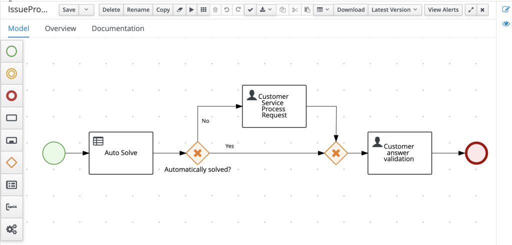
2. Now, accessing the project page again, search and open the asset named “IssueSolver“.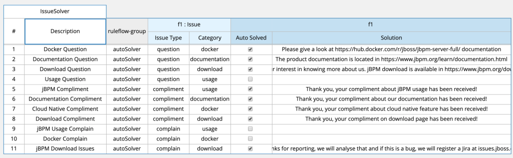
The rule editor displays a decision table. This is a group of business rules, each line represents a single rule and its consequence (when this, then that).The source tab is available if the developer wants to check the generated drools code. The first table line is converted to:
//from row number: 1
//Docker Question
rule "Row 1 IssueSolver"
ruleflow-group "autoSolver"
dialect "mvel"
when
f1 : Issue( type matches "question" , question : question matches "Docker"
then
modify( f1 ) {
setAutomatic( true ),
setSolution( "Please give a look at https://hub.docker.com/r/jboss/jbpm-server-full/ documentation" )
}
end
Explore the project and feel free to add new rules or change the process if you want.
Exporting a project from business central
Whenever a user wants to get the maven project that exists within business central into a local environment, it is necessary to export it.
| It is recommended to work with a remote git repository which is the “Source of truth”. When using this practice, every developer of the project, using Business Central or any other IDEs, should always keep the project in sync with that unique git remote repository, that’s why it is named a “single source of truth”. |
The URL for every project repository inside Business Central is easily accessible. Check the following steps on how to export the project that you authored into Business Central, as a maven project to your local machine.
Check the following steps on how to export the project that you authored with Business Central, as a maven project on your local machine.
- Inside Business Central, access the project page and click on the settings tab. Locate and copy the git URL ready to use with git or ssh protocols:
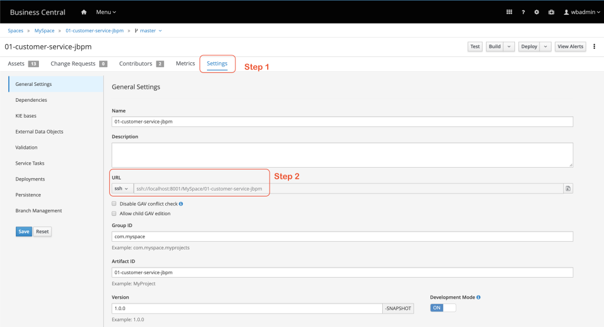
In the above example, Business Central is running on localhost. Although, this environment could be running on a docker container inside a Kubernetes environment with a dynamic address, for example. This is an easy way to find the URL to clone the project.With this URL, a developer can clone the project and keep it in sync using common git versioning practices. The SSH protocol requires that the user is configured into the URL when cloning the project. Valid user and roles are required because SSH protocol allows the user to push changes back to the business central repository.
- Next, enter the ~/learn-jbpm/labs/ folder and clone the project from Business Central to your local machine:
# Enter the labs folder $ cd ~/learn-jbpm # Get the project from business central internal git repository using wbadmin user $ git clone ssh://wbadmin@localhost:8001/MySpace/lab01-hello-jbpm
Feel free to import it as a maven project to your favorite IDE’s, check the project structure, change or add some files. It is an usual maven project so you can run a maven clean install, or a maven clean package . After compiling the project you can notice that a jar is created in the project’s target folder.
When editing the project don’t forget to add new files using git add, to commit them with a message, and finally pushing them back to business central.
$ git commit -m "my first commit" $ git push origin master
Deployment
Now that we have our project inside Business Central, let’s deploy it! … But where? In the Kie Server!
Another feature provided by Business Central (BC), is an integration with the intelligent engine, Kie Server. Business Central is able to communicate with Kie Server, create Kie Containers and deploy a kjar into it.
The deployment inside Kie Server creates the executable version of your business project and its assets.
When accessing the project page, there are currently two options: “Build” (Build & Install) and “Deploy” (Redeploy).
- Build: compiles the current project;
- Build & Install: compiles the project and install it to Maven repositories; The considered repositories are configured into the project pom.xml <repositories> or <distributionManagement> sections, or into the maven global configuration settings.xml (maven installed on the machine where this BC runs).
- Deploy: Will compile and install the project, connect to available Kie Servers, create a Kie Container and deploy the current version;
- Redeploy: Will redeploy the current version and when development mode is activated, the active process instances are not aborted. This is only recommended on the development environment, therefore, it is available only for SNAPSHOT versions;
From jBPM version 7.20 and higher, a development mode configuration for the project is available. It simplifies the deployment strategy and development cycle during the development phase.
Now, let’s deploy the project we imported previously.
- Access the project lab01-hello-jbpm page, and deploy it to the Kie Server engine.
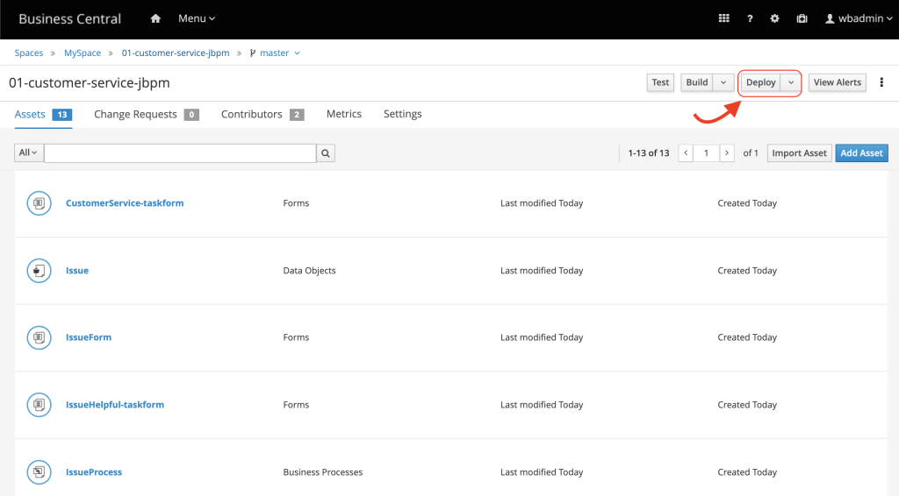
2. After clicking the deploy button, you should see two green boxes with the following two messages:”Build Successful”, “Deploy to server configuration successful and container successfully updated.”.The project is deployed and ready to be tested! Now, let’s open the Kie Server management page to validate the execution environment.
- Click on the “Menu” option in the top bar, and select “Execution Servers” under the “Deploy” options. After doing that, you should see the following page:
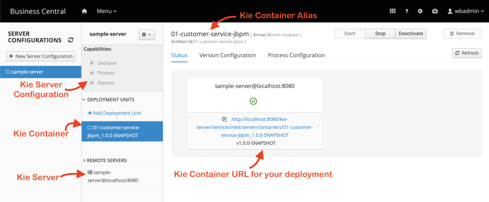
The Execution Server page shows details about each Kie Server which is being monitored by the Business Central, the controller. It displays the capabilities provided by each Kie Server, displays the Kie Containers deployed in each Kie Server, and displays the link to access the available Kie Containers that have deployment units available.
The monitoring and access to Kie Server are facilitated when using Business Central. In this example, Business Central and Kie Server are running within the same JVM, same WildFly server. It is important to notice that the URL for the Kie Container is basedon IP:PORT/kie-server/. This means that the kjar deployment is not running on top Business Central but, this controller can manage and deploy projects on top of Kie Servers available even on different machines.
Kie Server will be detailed in a bit. Let’s proceed with Business Central overview.
Management
Business Central has all the out-of-the-box features to enable the user to interact with business processes, cases, and tasks. Once the project is finished, it is possible to test the whole cycle:
- Build and Deploy the project into a Kie Server;
- Start a new instance of a process;
- Interact with the human tasks of this process;
- Visualize the diagram with live information and retry option; Possibility to abort processes or tasks, as well as other available actions.
Try managing the processes deployed in Kie Server, with Business Central, by following the next hands on example.
The available process definitions in the monitored Kie Servers can be accessed in the top menu, in the “Manage” option, “Process Definitions” page. A list of processes definitions is displayed with process name, version and the deployment (GAV). This is where we can start new process instances for the definition created during the authoring.
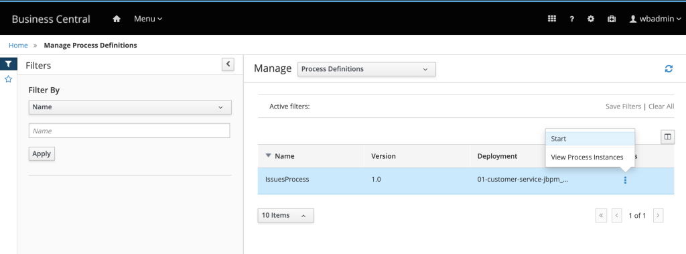
The web form which is displayed is also part of the project. It was automatically generated and slightly adapted. Fields like the date picker are out-of-the-box components.Whenever a user wants to get the maven project that exists within business central into a local environment, it is necessary to export it.
| If you want t change the form, open the project page and search for “com_myspace_lab01_hello_jbpm_Issue” form file. The form modeler will display a friendly way to change this HTML form. |
- Fill the form with the following artificial data (for a first try, use the suggested report and type):
- Person Name: John Doe Reporter (Any name is valid)
- What would you like to report? : jBPM Documentation
- Type?: Question
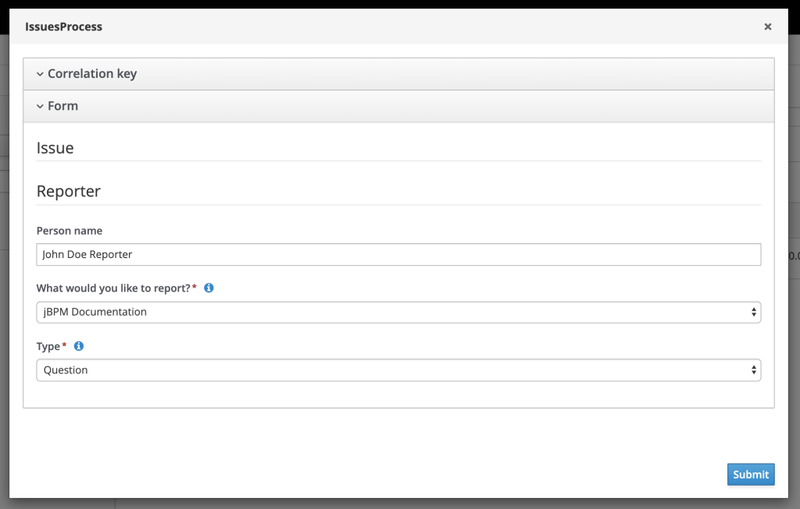
- Click on submit to start a new instance of this process.
Business Central redirected you to the Process Instance management page. You are now visualizing real-time data from this running process instance, with id 1. Click on “Diagram” tab to check what has happened already, and what is the currently active task in this process instance:
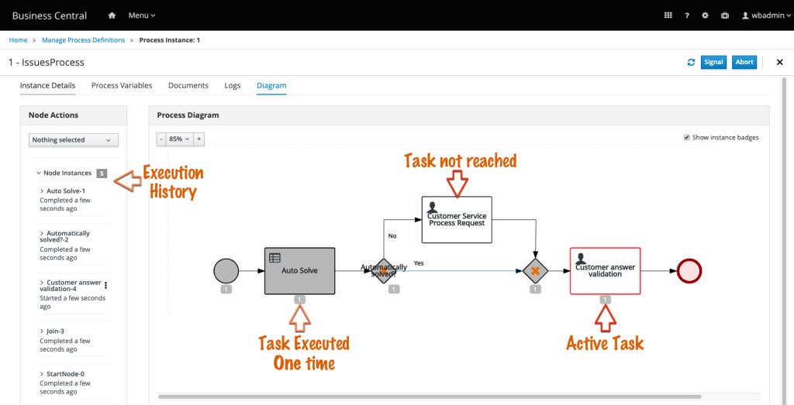
This information is valuable not only for debugging task but also for business team members who want to check the details of a respective process instance execution (“Why is it taking too long?”, “How long did each task take?”, “Which paths did the flow go through?”, “How many times a task was executed?”).The diagram shows that the Rule Task has been executed, and based on the input data, provided in the form, it automatically solved the issue. Therefore, the customer service was not necessary. The flow then activates a task “Customer answer validation” where it is expected that the requester (John Doe in this example), observe the solution and rates it.
Let’s interact with this task as if we are the “John Doe” reporter:
- On the top Menu, under the “Manage” section, click on “Tasks”. The manage tasks page opens with a list of available tasks (which belongs to active process instances) and its details.
- Click on the task line from “Customer answer validation“. The task form will open, showing the data that was provided during the process instance creation, and this form is also part of the project and can be visualized and edited in the project editor.
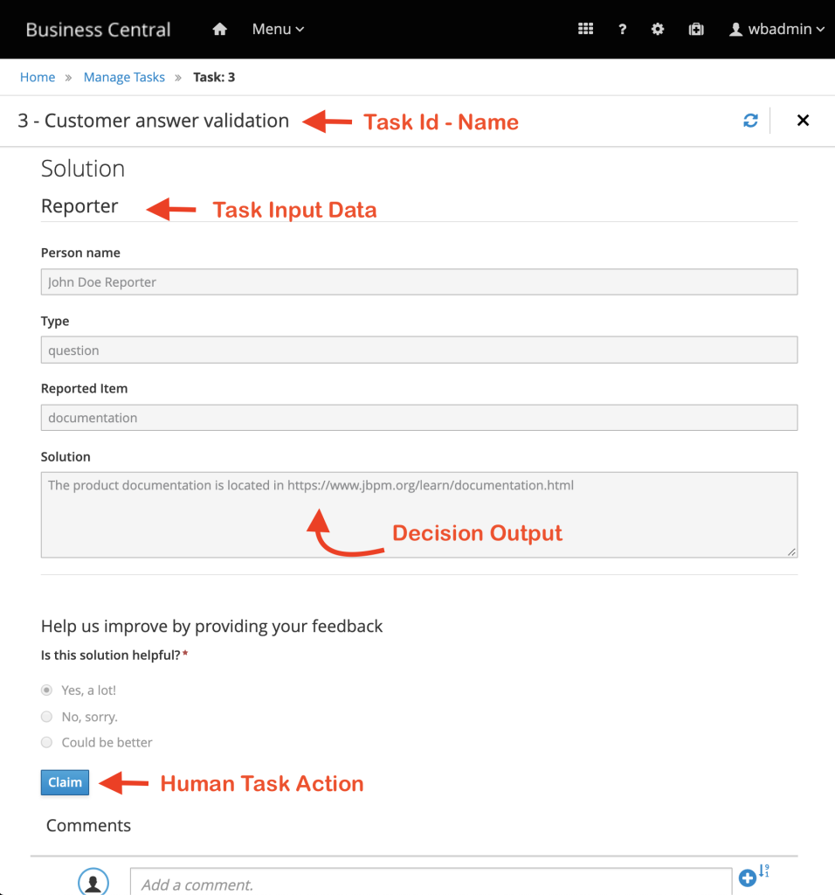
The solution was automatically defined by the engine based on the decision table. The engine identified this is an automatically solved task, and forwarded the task to the customer so that he can see the provided solution and rate it based on how helpful it was.
Whenever a user wants to get the maven project that exists within business central into a local environment, it is necessary to export it.
| The Human Task has its own lifecycle based on HT-WS specification. Details will be provided on further blog posts. |
This task is available and waiting for the user to claim it and start it.
- Click on the blue “Claim” button, and then, click on “Start“.
- Select one of the three options for the question “Is the solution helpful?“, and click on the blue button “Complete“.
Business central redirects back to tasks list and the task is no longer present.
- On the top “Menu“, under the “Manage” section, choose “Process Instances“
- On the left bar, filter the processes list by clicking on the “Completed” checkbox. The process instance you are interacting with appears on the list.
Click on the process instance, and navigate to the “Diagram” tab.
Observe the flow which was executed and notice that now, the “Customer answer validation” task is gray, meaning it was executed. And finally, the process reaches the end.
Feel free to explore Business Central authoring, deployment and management pages for a while. Try to increase the IssueProcess process definition version, using the process designer. Then, change one of the available forms and deploy the project again. Start a process instance and validate your changes. Have fun!
Monitoring
There are two Business Analysis and Monitoring dashboards available by default. The “Process Reports” show data about the running processes that run in the monitored Kie Servers. The “Tasks Reports“, shows data about the users’ tasks status, owners, and more.
Both reports are available under the top Menu, and under “Track” section. Process
Reports contains information about the process instances which you played with on the last exercises. These real-time data are valuable and really useful for Biz users.
If you tried running some process instances and executing the tasks, when you access “Task Reports” page you will see a more diverse graph. This dashboard with information from aproduction environment leads to the identification of bottlenecks in the organization processes which involves human tasks. Staff performance is just one of the possible information obtained.
Well designed dashboards with that expose the right KPIs, are converted into information that acts like lights that guide the biz team through the dark roads of enterprise improvements and growth.
On the next post, we’ll learn a little bit more about the intelligent execution engine – Kie Server.
This blog post is part of the third section of the jBPM Getting started series: Automate your business with jBPM